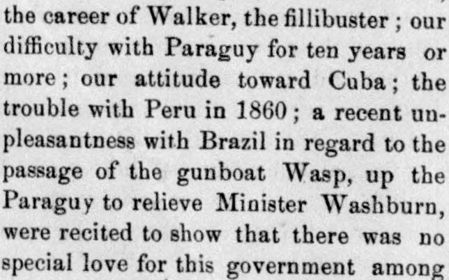
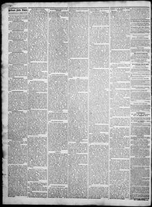

See the full pageVer la página completaDifficulty with Paraguy for ten years or more; our attitude towardDificultad con el Paraguay durante diez años o más; nuestra actitud hacia
The newspaper reported that a Senator argued the annexation of Santo Domingo would provoke the jealousy and fear of other American republics, which view the United States without special affection due to past difficulties with Paraguay, Cuba, Peru, and Brazil. Furthermore, the Senator stated that the people of Santo Domingo are not homogeneous with America, making the territory a costly burden, and asserted that the Monroe Doctrine does not justify the United States seizing adjoining lands.El diario dio cuenta de la intervención de un senador quien sostuvo que la anexión de Santo Domingo concitaría los recelos y el temor de las demás repúblicas americanas, las cuales miraban a los Estados Unidos sin particular simpatía a raíz de pasados diferendos con Paraguay, Cuba, Perú y Brasil. Agregó además que la población de Santo Domingo no guardaba afinidad ni homogeneidad con el pueblo estadounidense, constituyendo el territorio una carga onerosa, y afirmó que la doctrina Monroe jamás justificaba la apropiación de territorios circunvecinos por parte de los Estados Unidos.
FULL TEXT:TRADUCCIÓN:
A BULLY AMONG REPUBLICS.UN MATÓN ENTRE REPÚBLICAS.
Our reputation among sister republics in America the Senator did not consider wholly unblemished, and it was not likely to grow brighter from Santo Domingo complications. Our experience with Mexico when Texas became a part of this Union; the Greytown affair in 1852; the career of Walker, the fillibuster; our difficulty with Paraguy for ten years or more; our attitude toward Cuba; the trouble with Peru in 1860; a recent unpleasantness with Brazil in regard to the passage of the gunboat Wasp, up the Paraguy to relieve Minister Washburn, were recited to show that there was no special love for this government among those nations. The annexation of Santo Domingo, whether of spontaneous origin or nursed by the military, naval and financial power of the United States, cannot fail to excite the jealousy and fear of all the American republics.Nuestra reputación entre las repúblicas hermanas en América el Senador no la consideró enteramente inmaculada, y no era probable que se hiciera más brillante por las complicaciones de Santo Domingo. Nuestra experiencia con México cuando Texas se convirtió en parte de esta Unión; el asunto de Greytown en 1852; la carrera de Walker, el filibustero; nuestra dificultad con Paraguy durante diez años o más; nuestra actitud hacia Cuba; el problema con Perú en 1860; un reciente desagrado con Brasil en cuanto al paso de la cañonera Wasp, río arriba por el Paraguy para relevar al ministro Washburn, fueron recitados para mostrar que no había un amor especial por este gobierno entre aquellas naciones. La anexión de Santo Domingo, ya sea de origen espontáneo o alimentada por el poder militar, naval y financiero de los Estados Unidos, no puede dejar de excitar los celos y el temor de todas las repúblicas americanas.
Bellows Falls Times. Bellows Falls, Vt., April 14, 1871.
See the original at the Library of CongressVer el original en la Biblioteca del Congreso
Published by: A.N. Swain, 1856-1965.Publicado por: A.N. Swain, 1856-1965.
Edition: Edition 1Edición: edición 1
Page: 2Página: 2
Frequency: weekly (1856–1965)Frecuencia: semanal (1856–1965)
Collection: Chronicling America, Library of CongressColección: Chronicling America, de la Biblioteca del Congreso
LCCN: sn84022549LCCN: sn84022549
ISSN: 2475-2827ISSN: 2475-2827
OCLC: 10467562OCLC: 10467562
Rights: public domain, according to the Library of CongressDerechos: dominio público, según la Biblioteca del Congreso